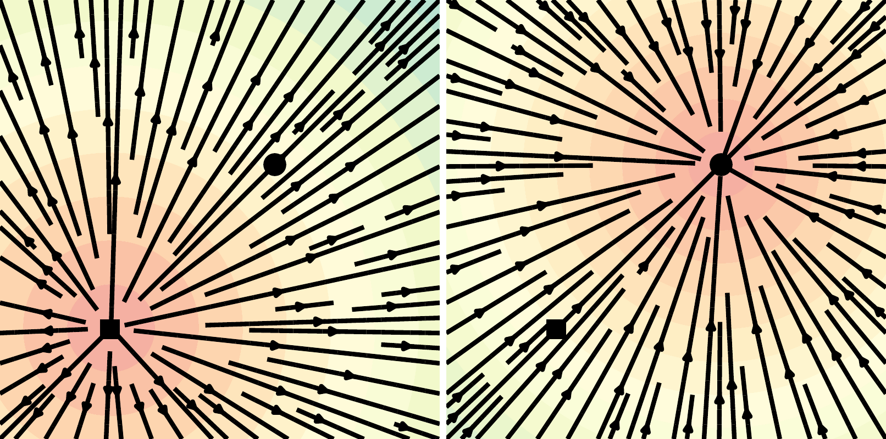
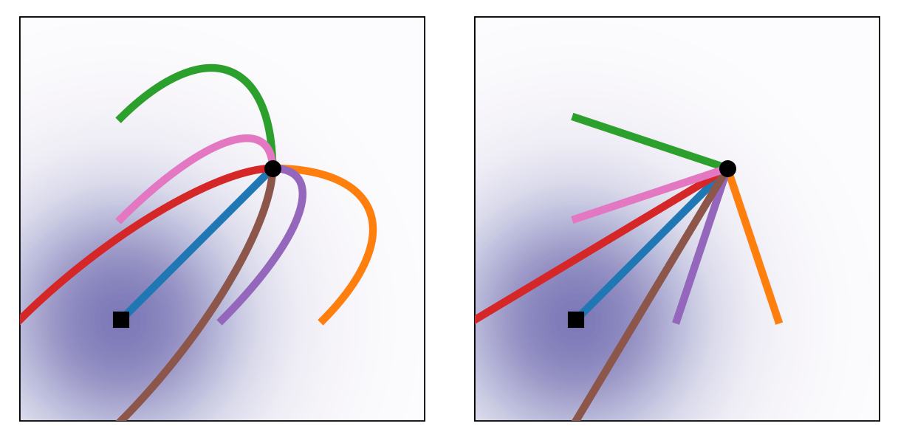
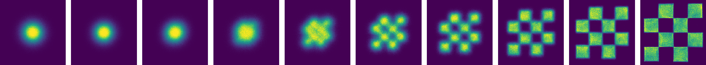
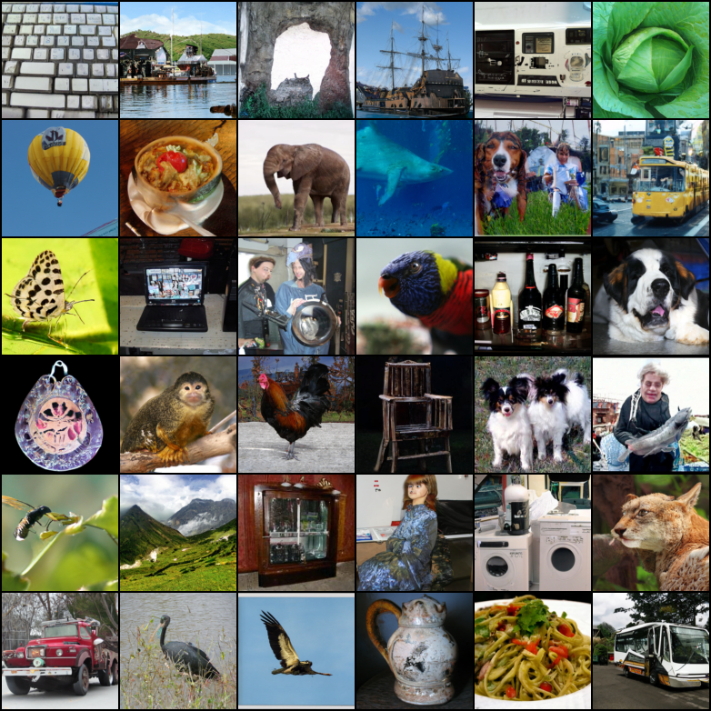
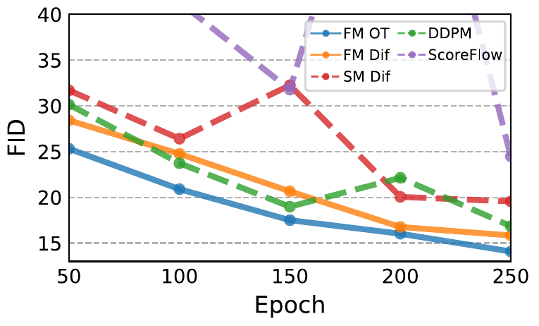
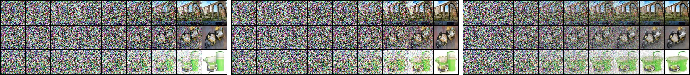
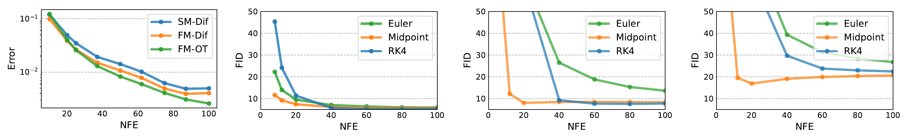

🎮 费曼一分钟（通俗速读）
想象生成一张图片，就像把一片噪声云慢慢「流」成一座数据岛：起点是随机混沌，终点是清晰图像。扩散模型（DDPM）走的是一条绕远路的弯曲河道——粒子必须沿预设的 VP 噪声调度蜿蜒前行，采样步数多、路径长；而最优传输（OT）则像直线航道，两点之间最短。
Flow Matching（FM）的核心招数是：不再让神经网络一步步「猜噪声 $\epsilon$」，而是直接教它学水流方向（向量场 $v_t$）——在每个位置、每个时刻，告诉你「往哪流」。训练时随机抽一张真实图 $x_1$、一个时刻 $t$，在条件路径上采样中间点 $x\sim p_t(x\mid x_1)$，让网络回归条件向量场 $u_t(x\mid x_1)$；关键是 Theorem 2 保证这等价于学全局 FM 目标，且完全无需模拟 ODE（simulation-free）。
三个核心概念：① CNF + ODE 流——用连续时间常微分方程把噪声映射到数据；② CFM——把难算的全局向量场拆成「给定终点 $x_1$ 的条件路径」，梯度相同但可 tractable；③ OT 直线路径（式21）——$x_t=t x_1+(1-t)x_0$，比扩散路径更短、采样 NFE 更少，ImageNet-128 上 FID 20.9、训练只需 500k iter。
Abstract
Continuous Normalizing Flows (CNFs) are a powerful class of generative models that learn invertible transformations between noise and data. However, training CNFs via maximum likelihood requires simulating the ODE during training, which is computationally expensive. We introduce Flow Matching (FM), a simulation-free approach to train CNFs by regressing vector fields that generate probability paths between a source distribution (noise) and a target distribution (data).
We show that FM objectives can be tractably optimized using Conditional Flow Matching (CFM), which has the same gradients as FM but uses conditional probability paths. We demonstrate that FM with Optimal Transport (OT) paths achieves state-of-the-art performance on ImageNet 64×64 and 128×128, with faster training and fewer sampling steps than diffusion models.
连续正则化流（CNF）是一类强大的生成模型，学习噪声与数据之间的可逆变换。然而，通过最大似然训练 CNF 需要在训练过程中模拟 ODE，计算代价高昂。我们提出 Flow Matching（FM）——一种 simulation-free 的方法，通过回归「生成从源分布（噪声）到目标分布（数据）的概率路径」的向量场来训练 CNF。
我们证明 FM 目标可通过 Conditional Flow Matching（CFM）高效优化：CFM 与 FM 梯度相同，但使用条件概率路径。实验表明，采用最优传输（OT）路径的 FM 在 ImageNet 64×64 与 128×128 上取得当时最优表现，且训练更快、采样步数少于扩散模型。
段落功能
点出 CNF 训练痛点（ODE 模拟贵）与 FM 解法（回归向量场、simulation-free），并预告 CFM 与 OT 路径的 SOTA 结果。
逻辑角色
论证链起点：把「CNF 强但难训」与「扩散强但慢」之间的空白，用 FM 一次性回应。
论证技巧 / 潜在漏洞
技巧：摘要同时锚定方法论（simulation-free）、理论（CFM 同梯度）与硬指标（ImageNet SOTA）。漏洞：「SOTA」依赖特定指标组合（NLL/FID/NFE），与当时最强扩散（ADM）的公平对比留到 §6。
1. Introduction
Generative modeling has seen remarkable progress with diffusion models achieving state-of-the-art image synthesis. Diffusion models define a fixed probability path from data to noise via a forward SDE/ODE, then learn to reverse it. While effective, diffusion paths are often suboptimal — they require many discretization steps (high NFE) for high-quality samples, and the predefined variance-preserving (VP) paths are not the shortest routes from noise to data.
生成建模在扩散模型推动下取得了显著进展，扩散模型已在图像合成上达到最优水平。扩散模型通过正向 SDE/ODE 定义一条从数据到噪声的固定概率路径，再学习其逆过程。虽然有效，但扩散路径往往并非最优——高质量采样需要大量离散化步数（高 NFE），且预定义的方差保留（VP）路径并非从噪声到数据的最短路线。
段落功能
先承认扩散模型的成功，再指出其路径效率问题（弯曲 VP 路径 → 高 NFE）。
逻辑角色
问题语境：既然扩散已经 SOTA，为何还要 Flow Matching？答案预告：更短路径、更少步数。
Continuous Normalizing Flows (CNFs) offer an alternative: they model generation as an ODE $\dot{x}=v_t(x)$ whose flow map transports noise to data. CNFs are flexible and provide exact likelihoods, but training via maximum likelihood requires backpropagating through ODE solvers, making each training step expensive and numerically delicate.
We propose Flow Matching, which directly learns the vector field $v_t$ generating a desired probability path $p_t$, without simulating the ODE during training. Our Conditional Flow Matching (CFM) objective is tractable and provably equivalent (in gradients) to FM. Combined with OT displacement interpolants (straight-line paths), FM achieves better sample quality with fewer NFE than score-based diffusion.
连续正则化流（CNF）提供了另一种选择：把生成建模为 ODE $\dot{x}=v_t(x)$，其流映射把噪声运输到数据。CNF 灵活且提供精确似然，但通过最大似然训练需要在 ODE 求解器上反向传播，使每步训练既昂贵又数值敏感。
我们提出 Flow Matching，直接学习生成期望概率路径 $p_t$ 的向量场 $v_t$，训练时无需模拟 ODE。Conditional Flow Matching（CFM）目标可 tractable 地优化，且在梯度上与 FM 等价。结合 OT 位移插值（直线路径），FM 以更少 NFE 取得优于 score-based 扩散的样本质量。
段落功能
并列扩散（路径慢）与 CNF（训练贵）两条痛点，宣告 FM+CFM+OT 的三重解法。
逻辑角色
全文核心论点首次完整陈述：simulation-free 训 CNF + 更短 OT 路径 → 更快更好。
论证技巧 / 潜在漏洞
技巧：把 FM 定位为同时解决「CNF 训练难」与「扩散路径弯」两个独立问题。漏洞：OT 直线路径在图像高维空间是否真正「最优」缺乏严格证明，主要靠 2D 实验与 ImageNet 指标支撑。
2. Preliminaries (CNF & ODE Flow)
A CNF defines a time-dependent vector field $v_t:\mathbb{R}^d\to\mathbb{R}^d$ and an ODE $\frac{d}{dt}\phi_t(x)=v_t(\phi_t(x))$ with $\phi_0(x)=x$. The flow $\phi_t$ pushes forward a source density $p_0$ (e.g. $\mathcal{N}(0,I)$) to $p_t=[\phi_t]_\# p_0$. Training traditionally maximizes $\log p_1(x_1)$ via the instantaneous change of variables formula, requiring ODE simulation and trace estimation at each step.
Goal: find $v_t$ such that $p_1\approx p_\text{data}$. FM bypasses likelihood by matching $v_t$ to a target field $u_t$ that generates a prescribed path $p_t$ from $p_0$ to $p_\text{data}$.
CNF 定义时间依赖向量场 $v_t:\mathbb{R}^d\to\mathbb{R}^d$ 与 ODE $\frac{d}{dt}\phi_t(x)=v_t(\phi_t(x))$，初值 $\phi_0(x)=x$。流 $\phi_t$ 把源密度 $p_0$（如 $\mathcal{N}(0,I)$）推前为 $p_t=[\phi_t]_\# p_0$。传统训练通过瞬时变量变换公式最大化 $\log p_1(x_1)$，每步都需 ODE 模拟与 trace 估计。
目标：找到 $v_t$ 使 $p_1\approx p_\text{data}$。FM 绕过似然，直接把 $v_t$ 匹配到生成从 $p_0$ 到 $p_\text{data}$ 的预设路径 $p_t$ 的目标场 $u_t$。
CNF 训练流（自绘）
flowchart LR X0["x₀ ~ p₀
噪声 N(0,I)"] -->|"ODE 积分
dx/dt = v_t(x)"| XT["x₁ ~ p₁
≈ 数据分布"] VT["v_θ(t, x)
可学习向量场"] -.驱动.-> X0 LOSS["max log p₁(x₁)
需模拟 ODE + trace"] --> VT
逻辑角色
为 §3 FM 目标提供对照基线：FM 保留 CNF 的 ODE 采样框架，但换掉 MLE 训练范式。
3. Flow Matching & Conditional Flow Matching
Given a probability path $p_t$ connecting $p_0$ and $p_1=p_\text{data}$, FM learns $v_\theta$ by minimizing
$$\mathcal{L}_\text{FM}(\theta) = \mathbb{E}_{t\sim\mathcal{U}[0,1],\,x\sim p_t}\big[\,\lVert v_\theta(t,x) - u_t(x)\rVert^2\,\big],$$
where $u_t$ is the marginal vector field that generates $p_t$ via the continuity equation. Problem: $u_t$ is intractable — it depends on the entire data distribution through $p_t(x)$.
给定连接 $p_0$ 与 $p_1=p_\text{data}$ 的概率路径 $p_t$，FM 通过最小化下式学习 $v_\theta$：
$$\mathcal{L}_\text{FM}(\theta) = \mathbb{E}_{t\sim\mathcal{U}[0,1],\,x\sim p_t}\big[\,\lVert v_\theta(t,x) - u_t(x)\rVert^2\,\big],$$
其中 $u_t$ 是通过连续性方程生成 $p_t$ 的边际向量场。问题：$u_t$ 不可 tractable——它通过 $p_t(x)$ 依赖整个数据分布。
公式拆解
$\mathcal{L}_\text{FM}$ 是简单的 L2 回归：让网络 $v_\theta(t,x)$ 在每个时刻、每个位置拟合「正确的流向」$u_t(x)$。直觉上像学一张时变的风场图，沿风场积分就能从噪声流到数据。
论证技巧 / 潜在漏洞
技巧：把 CNF 训练从「模拟 + 似然」转为「向量场回归」，形式上与 DDPM 的 $\epsilon$-MSE 类似。漏洞：$u_t$ 本身算不出，目标看似不可优化——这正是 CFM 的动机。
Conditional Flow Matching (CFM) uses conditional paths $p_t(x\mid x_1)$ and conditional vector fields $u_t(x\mid x_1)$ for each data point $x_1$:
$$\mathcal{L}_\text{CFM}(\theta) = \mathbb{E}_{t,\,x_1\sim p_1,\,x\sim p_t(\cdot\mid x_1)}\big[\,\lVert v_\theta(t,x) - u_t(x\mid x_1)\rVert^2\,\big].$$
Theorem 2: $\nabla_\theta \mathcal{L}_\text{CFM} = \nabla_\theta \mathcal{L}_\text{FM}$ — CFM 与 FM 梯度相同，但 CFM 的 $u_t(x\mid x_1)$ 是闭式可算的。条件路径由条件流 $\psi_t$ 生成（式6–8）：
$$\psi_t(x\mid x_1): \text{条件流}; \quad p_t(x\mid x_1)=[\psi_t(\cdot\mid x_1)]_\# p_0; \quad u_t(x\mid x_1)=\frac{d}{dt}\psi_t(x\mid x_1)\Big|_{x=\psi_t^{-1}(x\mid x_1)}.$$
Conditional Flow Matching（CFM）对每个数据点 $x_1$ 使用条件路径 $p_t(x\mid x_1)$ 与条件向量场 $u_t(x\mid x_1)$：
$$\mathcal{L}_\text{CFM}(\theta) = \mathbb{E}_{t,\,x_1\sim p_1,\,x\sim p_t(\cdot\mid x_1)}\big[\,\lVert v_\theta(t,x) - u_t(x\mid x_1)\rVert^2\,\big].$$
定理 2：$\nabla_\theta \mathcal{L}_\text{CFM} = \nabla_\theta \mathcal{L}_\text{FM}$——CFM 与 FM 梯度相同，但 CFM 的 $u_t(x\mid x_1)$ 可闭式计算。条件路径由条件流 $\psi_t$ 生成（式6–8）：条件流 $\psi_t(x\mid x_1)$；条件密度 $p_t(x\mid x_1)=[\psi_t(\cdot\mid x_1)]_\# p_0$；条件向量场 $u_t(x\mid x_1)=\frac{d}{dt}\psi_t$ 在 $x=\psi_t^{-1}(x\mid x_1)$ 处取值。
CFM 训练循环（自绘）
flowchart LR X1["采样 x₁ ~ p_data"] --> T["采样 t ~ U[0,1]"] X0["采样 x₀ ~ p₀
N(0,I)"] --> PSI["条件路径
x = ψ_t(x₀|x₁)"] X1 --> PSI T --> PSI PSI --> XT["x ~ p_t(·|x₁)"] UT["目标 u_t(x|x₁)
闭式可算"] --> LOSS["L = ‖v_θ(t,x) − u_t(x|x₁)‖²"] XT --> NET["v_θ(t, x)
U-Net"] NET --> LOSS
设计取舍
关键 trick：把「依赖全数据分布的边际场 $u_t$」拆成「给定 $x_1$ 的条件场 $u_t(x\mid x_1)$」，每个样本独立可算；Theorem 2 保证聚合后梯度一致。这是 FM 能 simulation-free 的理论支点。
📄 原文 Figure 2（p.3）：条件 score vs OT 向量场（$t=0$）

4. Gaussian Conditional Paths: Diffusion vs OT
We instantiate CFM with Gaussian probability paths. Two choices:
Diffusion path (VP): $p_t(x\mid x_1)=\mathcal{N}(x;\,\alpha_t x_1,\,\sigma_t^2 I)$ matching variance-preserving diffusion schedules — trajectories are curved in data space (Fig. 3).
OT displacement interpolant: for $x_0\sim\mathcal{N}(0,I)$,
$$x_t = \psi_t(x_0\mid x_1) = t\,x_1 + (1-t)\,x_0 \quad\text{(Eq. 21)},$$
with $u_t(x\mid x_1)=x_1-x_0$ — straight-line paths that minimize transport cost between noise and data pairs. We denote FM with diffusion paths as FM-Diff and with OT paths as FM-OT.
我们用高斯条件路径实例化 CFM，有两种选择：
扩散路径（VP）：$p_t(x\mid x_1)=\mathcal{N}(x;\,\alpha_t x_1,\,\sigma_t^2 I)$，匹配方差保留扩散调度——轨迹在数据空间中弯曲（Fig. 3）。
OT 位移插值：对 $x_0\sim\mathcal{N}(0,I)$，
$$x_t = \psi_t(x_0\mid x_1) = t\,x_1 + (1-t)\,x_0 \quad\text{（式 21）},$$
对应 $u_t(x\mid x_1)=x_1-x_0$——噪声-数据对之间的直线路径，最小化传输代价。扩散路径版记为 FM-Diff，OT 路径版记为 FM-OT。
Diffusion vs OT 路径对比（自绘 SVG）
论证技巧 / 潜在漏洞
技巧：Eq.21 极简——OT 路径的目标场 $u_t=x_1-x_0$ 常数于 $t$，训练与采样都更直接。漏洞：OT 配对 $(x_0,x_1)$ 独立采样，非真正 Wasserstein 最优传输（小 batch 下只是直线插值启发式）。
📄 原文 Figure 3（p.4）：2D 轨迹 Diffusion vs OT

📄 原文 Figure 4 左（p.5）：2D Checkerboard FM-OT

6. Experiments
We evaluate FM-Diff, FM-OT, and score matching (SM) baselines on CIFAR-10 and ImageNet at 64×64 and 128×128 resolution. All models use the same U-Net architecture. We report NLL (bits/dim), FID, and NFE (number of function evaluations at sampling). Table 1 summarizes main results.
我们在 CIFAR-10 与 ImageNet（64×64、128×128）上评估 FM-Diff、FM-OT 与 score matching（SM）基线。所有模型使用相同 U-Net 架构。报告 NLL（bits/dim）、FID 与 NFE（采样时的函数求值次数）。表 1 汇总主要结果。
| 数据集 / 方法 | NLL↓ | FID↓ | NFE↓ |
|---|---|---|---|
| CIFAR-10 · FM-OT | 2.99 | 6.35 | 142 |
| CIFAR-10 · FM-Diff | 3.10 | 8.06 | 183 |
| CIFAR-10 · SM | 3.16 | 19.94 | 242 |
| ImageNet-64 · FM-OT | 3.31 | 14.45 | 138 |
| ImageNet-64 · FM-Diff | 3.33 | 16.88 | 187 |
| ImageNet-128 · FM-OT | 2.90 | 20.9 | — |
- 论点↔证据：FM-OT 在三项指标上全面优于 FM-Diff 与 SM；OT 直线路径 → 更低 NFE（CIFAR 142 vs SM 242）。
- 更快训练：ImageNet-128 FM-OT 用 500k iter、batch 1.5k 即达 FID 20.9；对比 Dhariwal & Nichol ADM 需 4.36M iter、batch 256——训练效率数量级优势。
- 统计严谨性：Table 1 为单次运行单值，未报告多 seed 方差；NFE 与 ODE 求解器容差相关。
📄 原文 Figure 1（p.1）：ImageNet-128 FM-OT 样本

📄 原文 Figure 5（p.7）：ImageNet-64 FID vs 训练 epoch

📄 原文 Figure 6（p.8）：样本路径 SM-Diff / FM-Diff / FM-OT

📄 原文 Figure 7（p.8）：误差 vs NFE + FID vs NFE

7. Conclusion
We introduced Flow Matching, a simulation-free framework for training CNFs by regressing vector fields along probability paths. Conditional Flow Matching makes training tractable with provably equivalent gradients. Using OT displacement interpolants, FM-OT achieves strong results on CIFAR-10 and ImageNet with fewer sampling steps and faster training than diffusion-based approaches, opening a path toward efficient continuous-time generative models.
我们提出了 Flow Matching——一种 simulation-free 框架，通过沿概率路径回归向量场来训练 CNF。Conditional Flow Matching 使训练可 tractable 地优化，且梯度可证等价。采用 OT 位移插值，FM-OT 在 CIFAR-10 与 ImageNet 上取得强劲结果，采样步数更少、训练更快于基于扩散的方法，为高效的连续时间生成模型开辟道路。
段落功能
收束 FM → CFM → OT 三重贡献，强调效率优势。
逻辑角色
论证链终点——将实验证据上升为「连续时间生成新范式」的方向性结论。
论证技巧 / 潜在漏洞
技巧：结论聚焦效率（NFE、训练 iter），与 Intro 痛点闭环。漏洞：ImageNet-128 FID 20.9 绝对值仍偏高，「SOTA」需结合 NLL 与训练成本理解，非全面碾压 ADM。
符号速查表
| 符号 | 含义 |
|---|---|
| $p_t(x)$ | 时刻 $t$ 的边际概率密度，$p_0=\mathcal{N}(0,I)$，$p_1=p_\text{data}$ |
| $p_t(x\mid x_1)$ | 给定数据点 $x_1$ 的条件概率路径 |
| $u_t(x)$ | 生成 $p_t$ 的边际向量场（不可 tractable） |
| $u_t(x\mid x_1)$ | 条件向量场（CFM 的回归目标，闭式可算） |
| $v_\theta(t,x)$ | 神经网络参数化的向量场（U-Net） |
| $\phi_t,\;\psi_t$ | 边际流 / 条件流；$\psi_t(x_0\mid x_1)$ 把 $x_0$ 映射到 $x_t$ |
| $\mathcal{L}_\text{FM}$ | Flow Matching 目标 $\mathbb{E}\lVert v_\theta-u_t\rVert^2$ |
| $\mathcal{L}_\text{CFM}$ | Conditional FM 目标 $\mathbb{E}\lVert v_\theta-u_t(\cdot\mid x_1)\rVert^2$，与 FM 梯度相同（Thm.2） |
| OT path | 位移插值 $x_t=t x_1+(1-t)x_0$（式21），$u_t=x_1-x_0$ |
| NFE | 采样时 ODE 求解的函数求值次数（越少越快） |
论证结构总览
→ 论点（FM 回归向量场 simulation-free；CFM 同梯度可 tractable；OT 直线路径更短）
→ 证据（Table 1：CIFAR FM-OT 2.99/6.35/142；ImageNet-64 3.31/14.45/138；128 FID 20.9；500k iter vs ADM 4.36M）
→ 反驳/局限（OT 配对非严格 Wasserstein；ImageNet FID 绝对值仍高；无多 seed 方差）
→ 结论（FM 是高效连续时间生成的新范式，启后续 Rectified Flow / SiT）
核心主张（一句话）
通过 Conditional Flow Matching 以 simulation-free 方式训练 CNF 向量场，并采用 OT 直线路径，可在更少采样步数与更短训练周期内达到优于 score-based 扩散的生成质量。
来源：arXiv:2210.02747（指标见 §6 Table 1） · 生成工具：paper-logic-reading skill（三栏版）
🧩 结构化十问（AI 解构）
让 AI 当助教，从十个角度提取论文骨架。
Q1 · 论文试图解决什么问题？
Q2 · 这是否是一个新问题？
Q3 · 要验证什么科学假设？
Q4 · 有哪些相关研究？如何归类？
- CNF / 流：FFJORD、Neural ODE
- 扩散 / Score：DDPM、Score SDE、NCSN
- OT + 生成：扩散 Schrödinger bridge、后续 Rectified Flow
Q5 · 解决方案的关键是什么？
Q6 · 实验是如何设计的？
Q7 · 用什么数据集评估？代码开源吗？
Q8 · 实验结果是否很好支持了假设？
Q9 · 这篇论文到底有什么贡献？
Q10 · 下一步可以做什么？
🔬 深挖追问
第一性原理 · 本质
生成的本质是构造一条从简单分布（噪声）到复杂分布（数据）的传输路径。扩散模型固定了 VP 路径再学逆过程；FM 则直接学「路径上的速度场」——把「学逆过程」替换为「学向量场」，且 CFM 让这变成简单的 supervised regression。
第一性原理 · 哲学基础
「路径优于终点」：与其在终点做复杂的 score/denoise，不如在全程定义清晰的流向。OT 直线哲学——两点之间最短路径——与扩散的「热力学随机游走」形成对比：前者追求效率，后者追求可解释的热力学类比。
第一性原理 · 数学基础
连续性方程 $\partial_t p_t + \nabla\cdot(p_t u_t)=0$、ODE 流 $\phi_t$、条件期望分解（Theorem 2 的证明核心：$\mathbb{E}_{x_1}[u_t(x\mid x_1)]$ 的梯度等于 $u_t(x)$ 的梯度）。Eq.21 的 OT 插值来自 displacement interpolation，在 Euclidean 空间中最小化 $L_2$ 传输代价。
批判性思维 · 我们还没问的根本问题（盲区）
- OT 路径的真实最优性：独立采样 $(x_0,x_1)$ 的直线插值 ≠ 全局 Wasserstein OT；高维图像上「直线」是否总是好路径？
- 与 DDPM 的统一框架：FM-Diff 与 VP 扩散的关系后续才由 I-CFM / SDE 统一；本文未充分展开。
- 似然与样本质量：FM-OT NLL 更好但 FID 在 ImageNet-128 仍 20.9——NLL 主导训练是否牺牲感知质量？
- ODE 求解器依赖：训练 simulation-free 但采样仍需 ODE 积分；高阶 solver 的成本与 NFE 权衡未深入。
- 条件生成：本文只做无条件；class-conditional / text-conditional FM 留待后续（SiT、SD3）。
- 统计严谨性：Table 1 无误差棒，单次运行难判显著性；与 ADM 对比训练预算不对等但有利 FM 叙事。